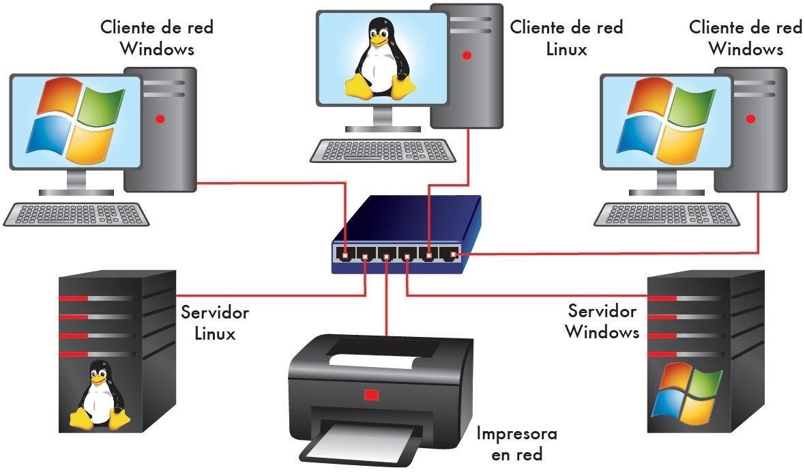
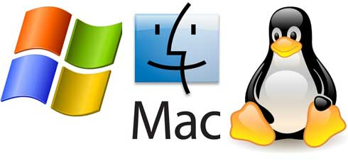
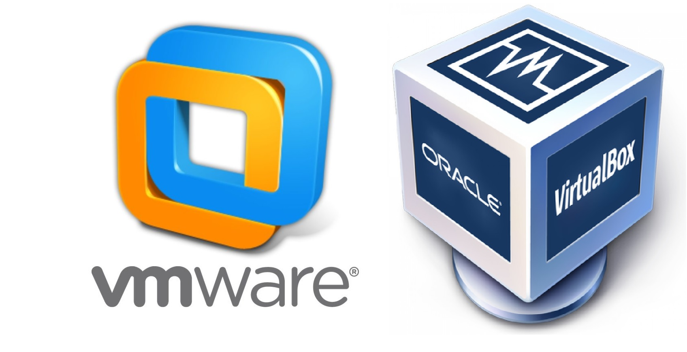
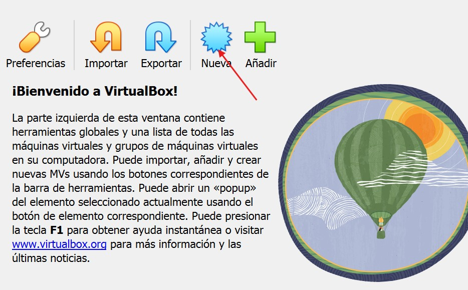
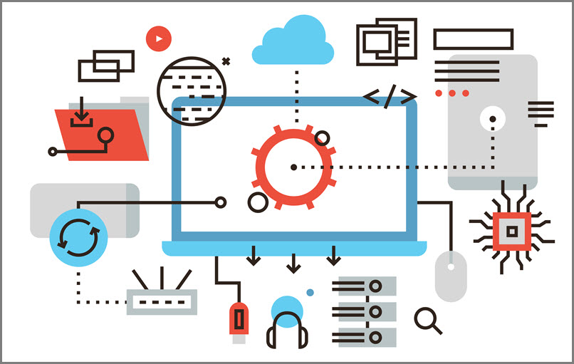
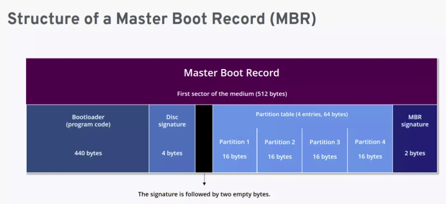
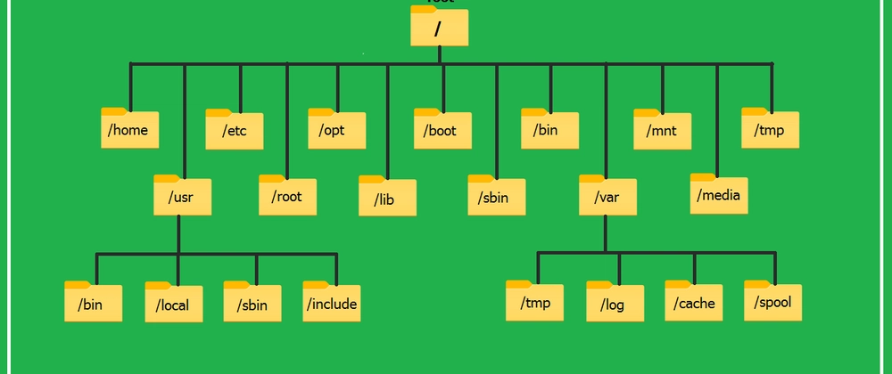
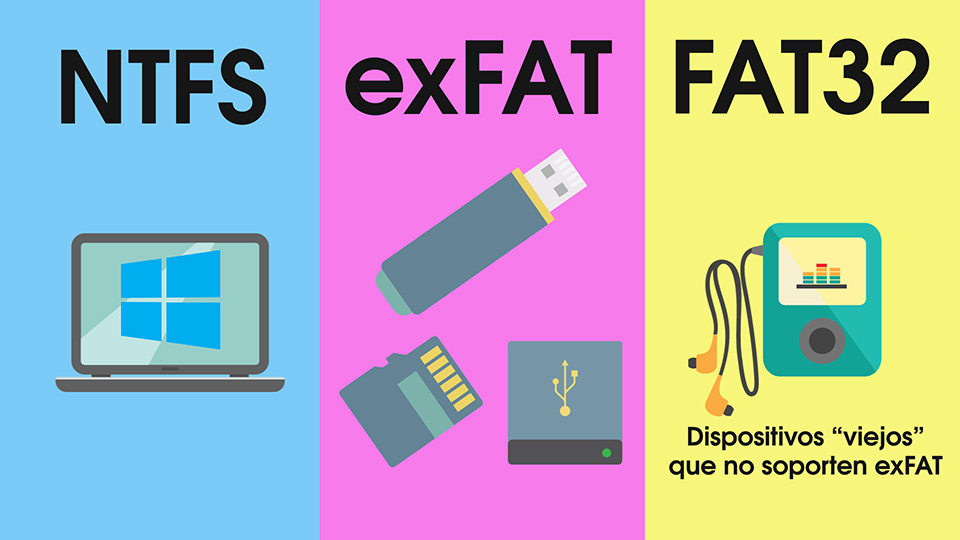
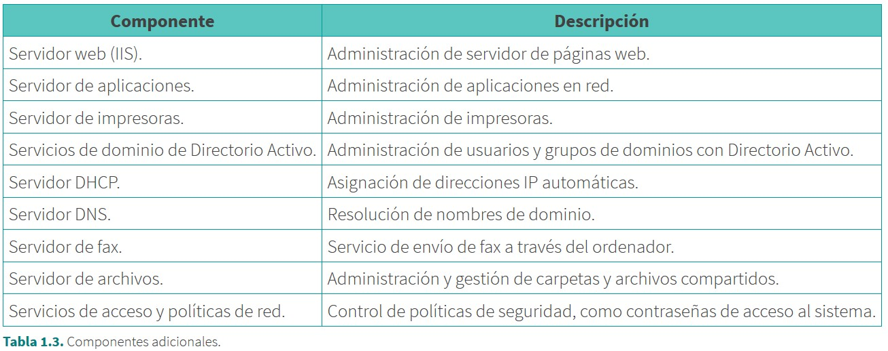
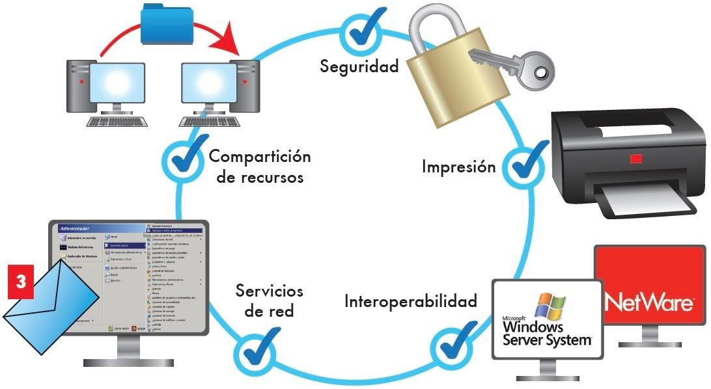

UT1 · Instalación de sistemas operativos en red
Vicente Català Ruiz · Profesor del Área de Informática
Índice
- 1. Introducción a los sistemas operativos en red
- 1.1. Características generales
- 1.2. Requisitos técnicos y de compatibilidad
- 2. Modos de instalación del sistema operativo
- 2.1. Instalación manual (VirtualBox)
- 2.2. Instalación automatizada
- 2.3. Instalación desatendida
- 3. Planificación del particionado de discos
- 3.1. Tipos de particiones
- 3.2. Herramientas de particionado
- 3.3. Asignación de espacio y formatos
- 4. Sistemas de archivos
- 4.1. Tipos de sistemas de archivos
- 4.2. Selección y configuración
- 5. Componentes y servicios del sistema operativo
- 5.1. Elección de componentes
- 5.2. Configuración inicial del entorno
- 6. Verificación postinstalación
1. Introducción a los sistemas operativos en red

Los sistemas operativos en red (SON) permiten que múltiples equipos, usuarios y servicios
trabajen de forma coordinada, segura y centralizada, compartiendo archivos, impresoras, usuarios
y aplicaciones, y controlando el acceso entre nodos de la red.
- Soporte multiusuario y perfiles con permisos.
- Gestión de recursos compartidos en la red.
- Seguridad y autenticación integradas.
- Estabilidad y tolerancia a fallos.
- Servicios de red (DNS, LDAP, NFS/SMB, impresión).
- Administración y monitorización remota.
Ejemplos:
- Windows Server: Active Directory, DNS, DHCP, Hyper-V.
- Mac: Server, AFP, Bonjour, Xsan.
- Linux: Samba, NFS, OpenLDAP, Apache/Nginx, KVM.

1.2. Requisitos técnicos y de compatibilidad
Antes de instalar un sistema operativo en red, es fundamental verificar que el hardware y software sean
compatibles con el SO deseado.
Ejemplos:
- Hardware: arquitectura 32 o 64 bits, cantidad de RAM, capacidad de almacenamiento
mínimo, drivers compatibles, etc.
- Compatibilidad: coexistencia con sistemas existentes, controladores críticos (RAID,
GPU).
- Software: apps y servicios necesarios, licencias y versiones.
- Red: direccionamiento IP, máscara, gateway, DNS y posible dominio/grupo de trabajo.
- Consulta listas de compatibilidad (HCL) y documentación del fabricante antes de instalar.
2. Modos de instalación del sistema operativo
Existen diferentes modos de instalación del sistema operativo:
- Instalación manual: proceso tradicional con interacción directa, ideal para
entornos de prueba o aprendizaje.
- Instalación automatizada: clonado de imagen maestra con scripts de posinstalación,
eficiente para despliegues masivos.
- Instalación desatendida: uso de archivos de respuesta que contienen todas las
decisiones, adecuada para entornos empresariales con requisitos homogéneos.
2.1. Instalación manual
La instalación manual consiste en seguir paso a paso el asistente que incluye el propio sistema
operativo. Es la forma más sencilla de aprender porque permite ver qué decisiones se toman y por qué.
A continuación se detallan los pasos para realizar una instalación manual de Windows Server:
- Descargar e instalar VMWare o VirtualBox: Desde la página oficial de VMware o
VirtualBox, descargar e instalar el software necesario para crear máquinas virtuales.

-
Descargar la imagen ISO: obtener la ISO de Windows Server 2022 desde el sitio
oficial de Microsoft o a través de un programa de evaluación. En este caso, descargamos la ISO de
evaluación gratuita de Windows Server 2022, que es válida por 180 días.
ISO Windows Server
2022
-
Preparar la máquina virtual: crear una nueva máquina en VirtualBox o VMware,
ponerle un nombre (por ejemplo, “Servidor2022”) y asignarle suficiente memoria (mínimo 4 GB)
y un disco virtual de al menos 40 GB.

-
Cargar la imagen de instalación: seleccionar la ISO de Windows Server 2022
para que la máquina arranque desde ella, igual que si fuera un DVD de instalación.
Nota importante:
Recomiendo no poner la ISO en la configuración de la máquina. Es mejor arrancar sin ISO y que
el asistente nos solicite la carga de la ISO al detectar que no hay un sistema operativo
instalado.
En algunos casos, se han reportado errores relacionados con esto.
-
Seguir el asistente: elegir el idioma, la zona horaria y la edición de Windows
Server
(por ejemplo, Standard). Después seleccionar la opción de “Instalación limpia” y aceptar
el particionado automático que recomienda el asistente.
-
Crear la contraseña del administrador: cuando termine la instalación,
Windows pedirá definir la contraseña del usuario “Administrator”. Es la cuenta principal del
sistema.
-
Primer arranque y comprobaciones básicas: comprobar que el servidor arranca,
que se puede abrir el “Administrador del servidor” y que la máquina tiene conexión de red.
Es un buen momento para crear un clon de la máquina que permita volver
atrás si es
necesario.
Recomendación:
Si no has visualizado la clase donde se explica cómo crear un clon de máquina virtual en VirtualBox
paso a paso, te recomiendo hacerlo antes de continuar con el proceso de instalación.
2.2. Instalación automatizada
La instalación automatizada permite configurar un sistema operativo sin necesidad de intervención manual
durante
el proceso de instalación. Esto se logra mediante archivos de configuración que definen todas las
decisiones
necesarias para la instalación, como idioma, zona horaria, particionado del disco, y creación de
usuarios.

En entornos empresariales, la instalación automatizada es especialmente útil para desplegar múltiples
servidores de forma rápida y consistente, asegurando que todos los sistemas tengan la misma
configuración base.
Herramientas comunes:
- Clonezilla: sistema libre de clonación de particiones y discos.
- FOG Project: solución de imagen y despliegue de sistemas en red.
- WDS (Windows Deployment Services): para despliegues automáticos en
redes Windows.
- Kickstart (para distribuciones Red Hat/CentOS) y Preseed (en
Debian/Ubuntu)
2.3. Instalación desatendida
La instalación desatendida es un proceso de instalación completamente automatizado que utiliza un archivo
de respuesta para proporcionar todas las respuestas necesarias durante la instalación del sistema
operativo. Este método es ideal para entornos empresariales donde se requiere una configuración
homogénea y rápida de múltiples sistemas.
Ejemplos de archivos de respuesta:
- Windows: Unattend.xml, utilizado por el asistente de instalación de Windows para
definir todas las opciones de configuración.
- Linux: Kickstart (Red Hat/CentOS) y Preseed (Debian/Ubuntu), que permiten
automatizar la instalación y configuración de sistemas Linux.
3. Planificación del particionado de discos
Particionar un disco consiste en dividirlo en varias partes lógicas llamadas
particiones.
Esta división permite organizar mejor el sistema operativo, los datos de los usuarios y los servicios
del servidor. Un buen particionado mejora la seguridad, el rendimiento y el mantenimiento del sistema.
- Permite separar sistema, datos y aplicaciones.
- Facilita copias de seguridad y recuperación.
- Evita que un fallo afecte a toda la información.
- Permite adaptar el servidor según su rol.
3.1 · MBR (Master Boot Record)
MBR es el método de particionado tradicional. Aunque sigue siendo compatible con muchos sistemas,
presenta limitaciones importantes en servidores modernos.

- Permite un máximo de 4 particiones primarias.
- Para crear más, es necesario usar una partición extendida con particiones lógicas.
- Límite de 2 TB por disco.
- Menos seguro: una única tabla de particiones.
- Útil en equipos antiguos o BIOS clásicas.
3.1 · GPT (GUID Partition Table)
GPT es el sistema de particionado moderno y recomendado para servidores actuales.
Permite trabajar con discos grandes y mejora la integridad de los datos.
- Admite hasta 128 particiones sin extendidas.
- Soporta discos de capacidad muy elevada (> 2 TB).
- Mayor seguridad: usa copias de la tabla y CRC32.
- Requiere firmware UEFI.
- Estándar en servidores modernos.
Particiones habituales en Linux
Linux organiza los datos en varias particiones según su función dentro del sistema:

- / → Partición raíz donde vive el sistema operativo.
- /home → Datos y configuraciones de los usuarios.
- /var → Logs, servicios, webs, bases de datos.
- /tmp → Archivos temporales del sistema.
- /opt → Aplicaciones adicionales.
- swap → Memoria virtual.
Particiones habituales en Windows Server
Windows asigna letras para identificar particiones. En servidores es habitual separar
sistema, datos y aplicaciones.
- C: Sistema operativo.
- D: Datos del servidor o aplicaciones.
- E:, F: Almacenamiento adicional o particiones específicas del rol.
- Recomendado: separar sistema, datos y programas.
3.2 · Herramientas de particionado (GUI)
Herramientas gráficas fáciles de usar, ideales para alumnos que comienzan:
- GParted — Muy potente en Linux.
- Disk Management — Integrada en Windows.
- Parted Magic — Entorno especializado de rescate y particionado.
3.2 · Herramientas de particionado (CLI)
Herramientas avanzadas usadas en entornos profesionales:
- Linux: fdisk, parted, cfdisk, gptfdisk.
- Windows: diskpart (potente y scriptable).
- Permiten crear, borrar y modificar particiones desde la terminal.
3.3 · Asignación de espacio
El tamaño de cada partición depende del uso del servidor:
- Servidor de archivos: mucho espacio para datos (
/home,
D:).
- Servidor de aplicaciones: reservar
/opt o particiones específicas.
- Servidor web: espacio para
/var/www y /var/log.
Buenas prácticas de particionado
- Separar sistema y datos para facilitar copias y recuperaciones.
- Dimensionar bien particiones dinámicas: /var, /tmp.
- Elegir GPT siempre que sea posible.
- Crear particiones según el rol del servidor.
- Usar el sistema de archivos adecuado para cada situación.
4. Sistemas de archivos
Cada sistema operativo tiene sus propios sistemas de archivos:
- Windows: NTFS (por defecto), ReFS (resiliencia), FAT32/exFAT (portabilidad).
- Linux: ext4 (equilibrio), XFS (alto rendimiento), Btrfs (snapshots/RAID), ZFS
(integridad).
- Multiplataforma: NFS, SMB/CIFS; ISO 9660/UDF (ópticos).

4.2. Selección y configuración
- Compatibilidad con SO y herramientas.
- Rendimiento según la carga.
- Características: cifrado, compresión, cuotas.
- Seguridad (ACL/POSIX) y recuperación ante fallos.
Tipos de sistemas de archivos recomendados según el SO:
| SO |
Sistema de archivos recomendado |
| Windows Server |
NTFS (ReFS para entornos de alta resiliencia) |
| Linux |
ext4 (XFS o Btrfs para casos específicos) |
| Multiplataforma |
NFS, SMB/CIFS para recursos compartidos; ISO 9660/UDF para medios ópticos |
5. Componentes y servicios del sistema operativo
- Básicos: drivers esenciales, herramientas de administración, servicios de red.
- Según rol: archivos (SMB/NFS), controlador de dominio (AD, DNS, NTP), aplicaciones
(PHP/Python/BBDD), impresión.
- Principios: mínima exposición y modularidad.

5.2. Configuración inicial
- Zona horaria, idioma/teclado y
hostname.
- Red: IP estática/DHCP, máscara, gateway, DNS, dominio/grupo de trabajo.
- Cuentas administrativas y políticas de acceso.
- Instalación sin GUI (Linux) o modo Core (Windows) cuando proceda.

6. Verificación postinstalación
6.1. Actualización del sistema
Siempre que se instale un sistema operativo, es fundamental actualizarlo para asegurar la
seguridad y estabilidad del entorno. Esto implica aplicar las últimas correcciones de seguridad
y mejoras de rendimiento disponibles.
6.2. Conectividad
Verifica que el sistema tenga conectividad de red mediante comandos como ping, traceroute/tracert, y nslookup. Asegúrate de que los servicios de red estén activos y
funcionando correctamente.
¿Qué has aprendido?
- Concepto y objetivos de un SON.
- Requisitos previos de compatibilidad.
- Modos de instalación y su contexto de uso.
- Particionado y selección de sistemas de archivos.
- Componentes por rol y configuración inicial.
- Actualización y verificación de conectividad tras instalar.